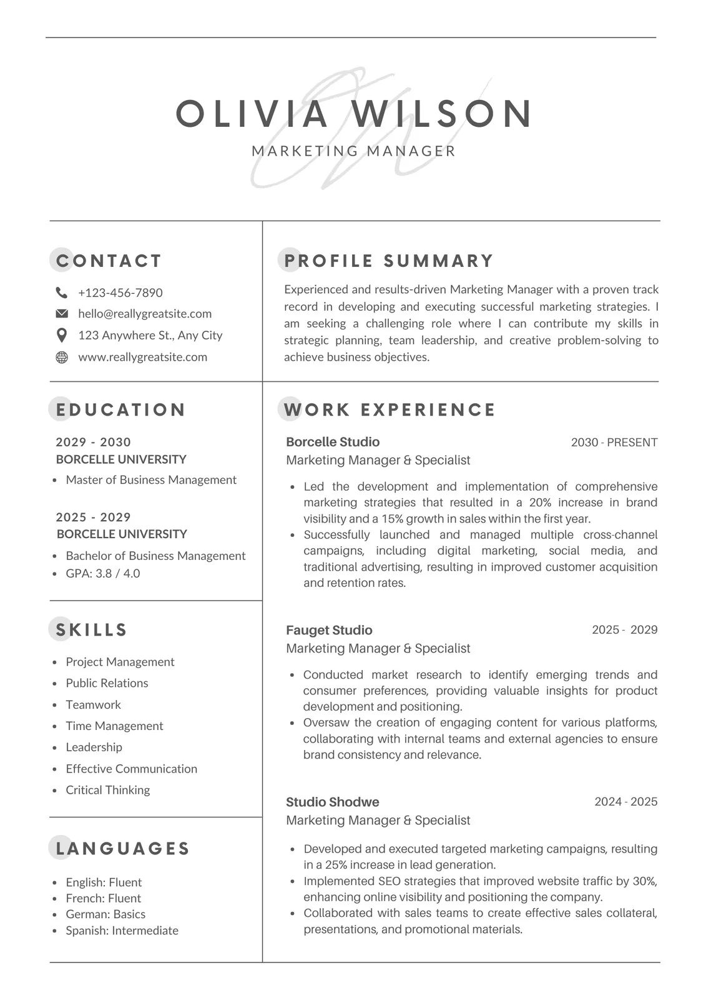

Your resume is often the first impression you make on an employer. A well-crafted resume can open doors to interviews and opportunities.
We help you create a resume that highlights your skills, achievements, and experience in a way that stands out to hiring managers. Below you will finding an example of how to create an outstanding resume.
